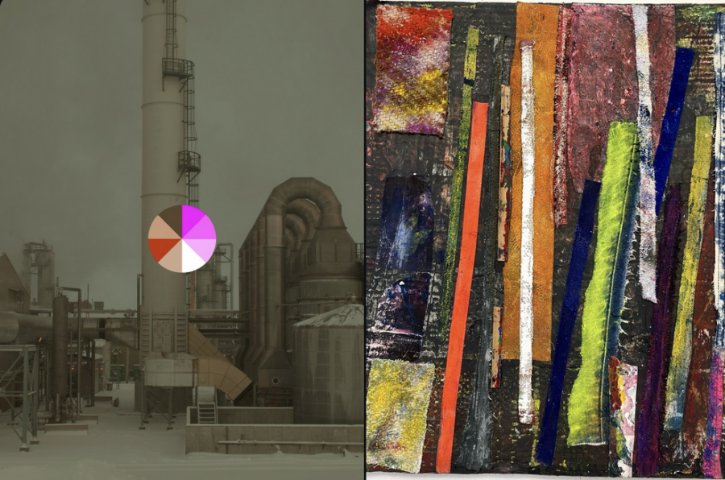

Chris Strong and Grant Newman
The Winter Exhibit at Lula Cafe features paintings by Grant Newman alongside a selection of photographs from Chris Strong. Mark your calendars for the Artist Reception Party: January 13th 6-9pm.

The Winter Exhibit at Lula Cafe features paintings by Grant Newman alongside a selection of photographs from Chris Strong. Mark your calendars for the Artist Reception Party: January 13th 6-9pm.